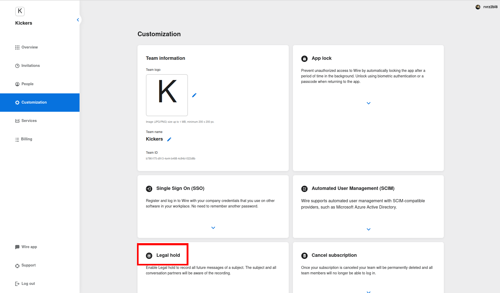
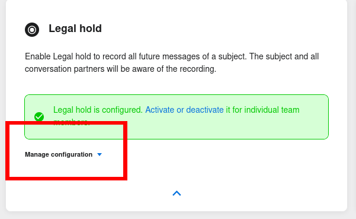
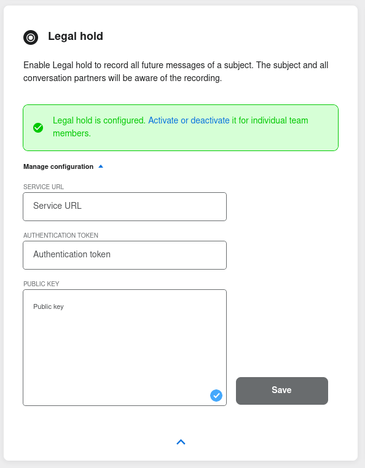
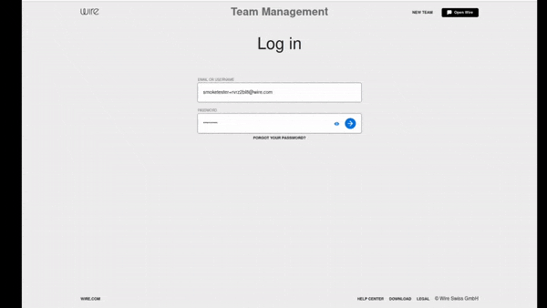

Installing and setting up Legal Hold
Introduction
Legal Hold is a service allowing for all communications of specific users of a Wire installation to be recorded in a secure vault, typically for legal reasons.
The Legal Hold service is composed of three different sub-services:
Collector, which collects the conversations from individual users
Exporter, which exports the conversations for storage
Hold, which holds the conversation after Collector collects them, and before Exporter exports them
A typical installation of Legal Hold looks like this:
The Legal Hold service/container is installed and run on a server
The Teams Settings for the team that will use Legal Hold is configured to use this service
Specific users in that team are selected to have Legal Hold activated
These users are asked to confirm that they are aware of the information collection. Once they do, Legal Hold is active for their account.
Information starts being collected by the Collector service and stored by the Hold service
Installing Legal Hold
To install and run Legal Hold, you need a server dedicated to the service.
Here we will use Ubuntu 18.04 as it is the system wire-server is installed on, but other systems should be possible.
First, we need to install postgreSQL:
sudo apt update
sudo apt install postgresql
You then need to change the password to the database. First enter the PostgreSQL console:
sudo -u postgres psql
Then use this command to change the password:
ALTER USER postgres PASSWORD '<your-postgresql-password>';
Also create a legalhold database:
CREATE DATABASE legalhold;
Now that we have a working PostgreSQL database, we need to install the actual legalhold services.
First install Git and Docker:
sudo apt update
sudo apt install docker.io
Generate a random secret (SERVICE_TOKEN) to use as your service token. This will be used in the Team Settings step later when entering configuration.
Here we will use secr3t as an example, however you can for example use this command to generate one:
openssl rand -hex 20
Finally, run the actual Docker container for the LegalHold service:
docker run \
-e DB_URL='jdbc:postgresql://localhost/legalhold' \
-e DB_USER='postgres' \
-e DB_PASSWORD='your-postgresql-password' \
-e SERVICE_TOKEN='secr3t' \
-p 80:8080 \
--name secure-hold --rm quay.io/wire/legalhold:1.0.4
DB_URLis the URL of your PostgreSQL database.
Now that the legalhold service is running, you need to configure the DNS for your domain so that legal.<yourdomain> redirects to this service.
Make sure you implement/enable HTTPS, and remember your TLS public key (in PEM format) as it will be necessary in the Team Settings configuration.
Configuring Team Settings to use Legal Hold
The next step is to configure the Wire Team, in the Team Settings interface, to interface with the newly installed Legal Hold service.
To do this, first go to teams.<your-domain>.
Once in the interface, select Customization in the menu on the left:

On the customization page, go to Legal Hold:

Under the Legal Hold section, click the small down-pointing blue arrow:

In the extended Legal Hold section, click on Manage Configuration:

From here, you can fill in the required configuration info:

Here, fill in the different fields:
Service URLis the domain you set up in the first step:https://legal.<your-domain>Authentication tokenis the token you created in first step, we usedsecr3tas an example, but you might have generated a random token withopenssl rand -hex 20Public Keyis the TLS public key (in PEM format) for the certificate you generated when implementing HTTPS in the first step.
Finally, click on Save.
Here is the entire process animated:
